La juez de la Audiencia Nacional Teresa Palacios , instructora del caso KIO , ha ordenado a la policía y a la Guardia Civil que investigue los medios de vida con los que cuenta actualmente Javier de la Rosa.

La magistrada quiere conocer si dispone de servicio doméstico , de otro personal , medios de transporte y , en definitiva , " todo cuanto conlleve a concretar los ingresos con que cuenta para subsistir y mantenerse él y su familia ".
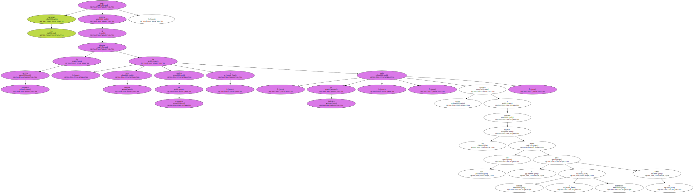La juez que investiga el presunto desvío de dinero del Grupo Torras-KIO durante la etapa del financiero Javier de la Rosa ha dictado una resolución inesperada en la que se interesa por el nivel de vida del empresario y si en estos momentos " tiene trabajo estable o desempeña alguna función en entidades privadas , propias o ajenas ".
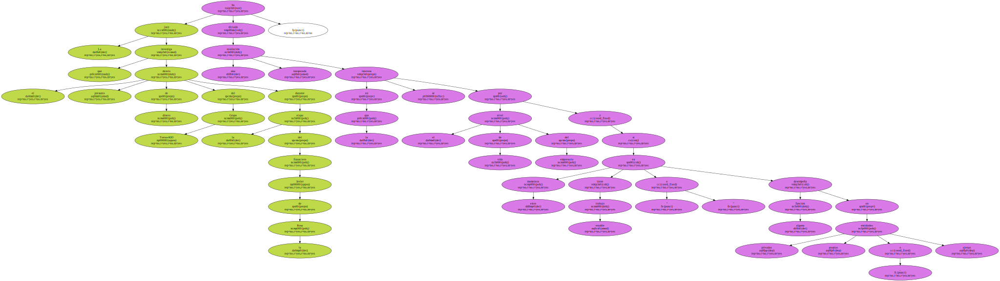La policía y la Guardia Civil deberán hacer un informe con sus conclusiones.
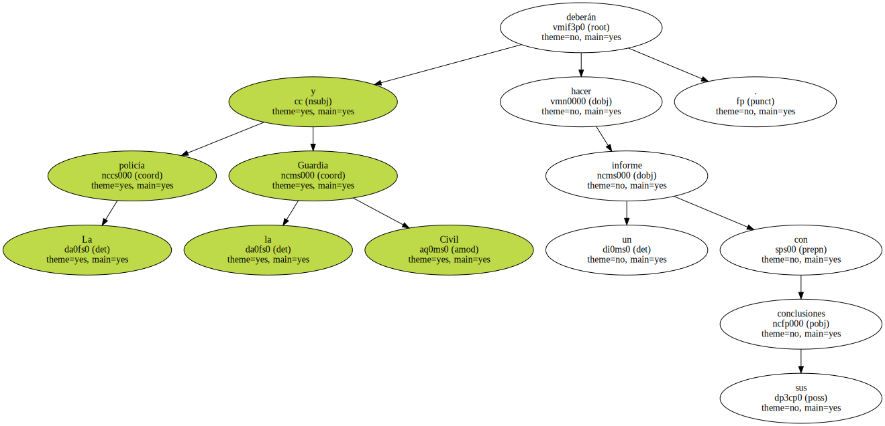REBAJA DE LA FIANZA.
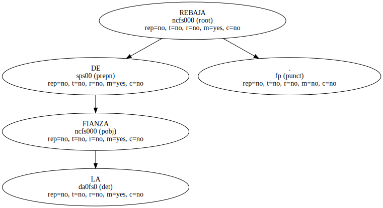Precisamente , la juez ordena la práctica de esta investigación en la misma resolución por la que se rebaja la fianza que en su día impuso a Javier de la Rosa para recuperar su libertad y salir de la prisión.
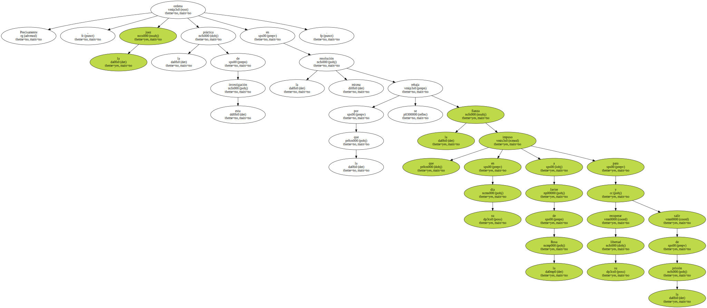La cantidad ahora fijada es de 1,6 millones de euros ( 270 millones de pesetas ) y antes ascendía a 2,4 millones de euros ( 400 millones de pesetas ).
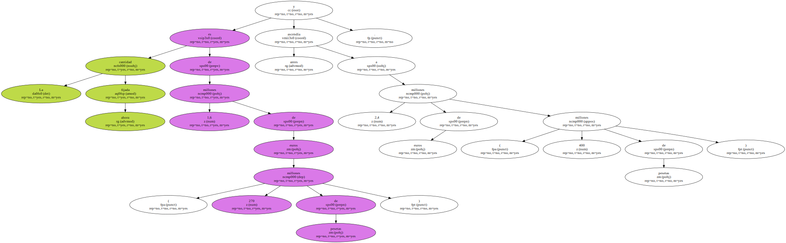El 30 de enero , la juez concedió al financiero 20 días para que sustituyera dos avales de 300.506 euros ( 50 millones de pesetas ) y 480.809 euros ( 80 millones de pesetas ) , librados , respectivamente , por el Banco Zaragozano y el Banco Bilbao Vizcaya , para garantizar su libertad.
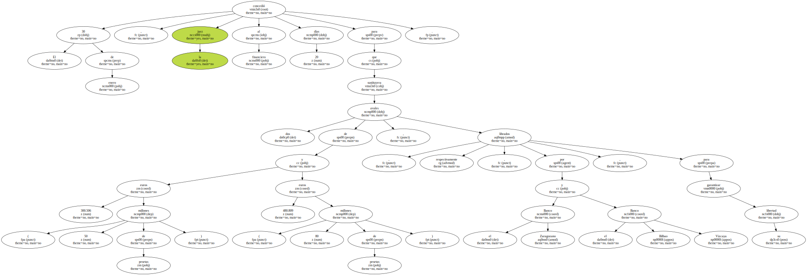Los abogados de De la Rosa comparecieron en el juzgado para comunicar que a su defendido , hasta ese momento , le resultaba imposible renovar o presentar nuevos avales , al carecer de los bienes necesarios para conseguirlos.
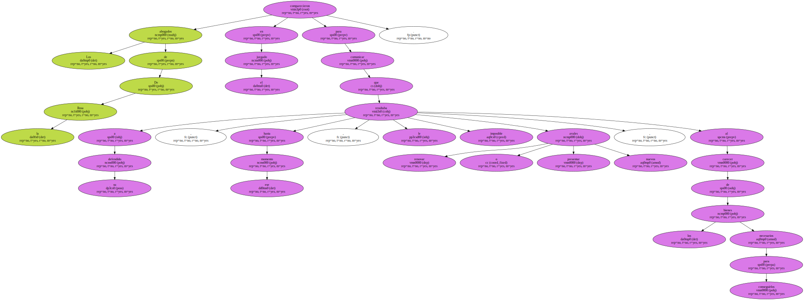Ante esta situación , la magistrada accedió a la rebaja de la fianza , aunque , paralelamente , ha ordenado la investigación sobre el modo y el nivel de vida del imputado.
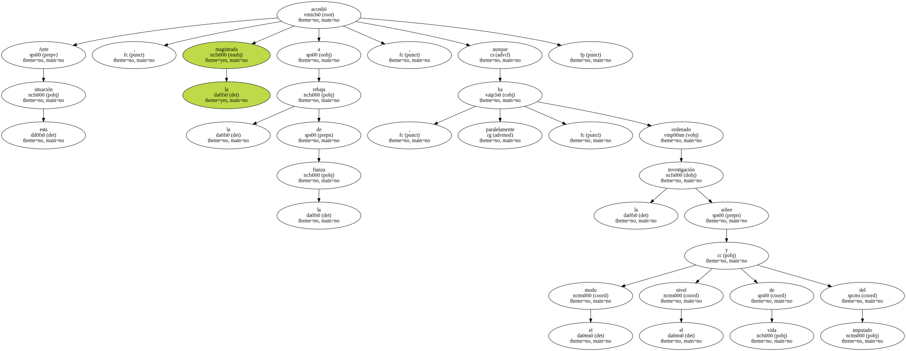La instructora del caso KIO , además , ha pedido que se recojan todos los datos y documentación de los avales ahora cancelados.
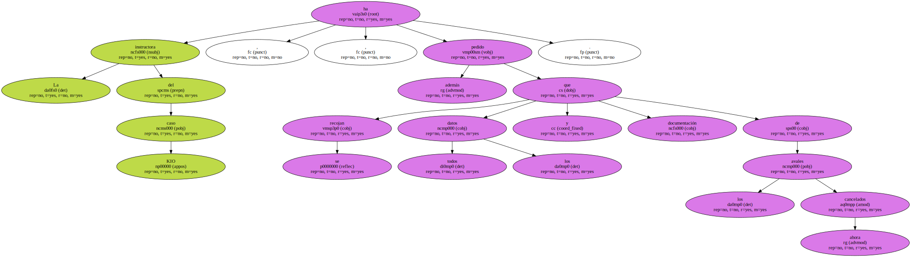RECURSO EN SUIZA.
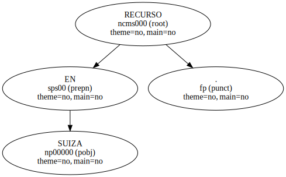La batalla judicial en Suiza continúa.
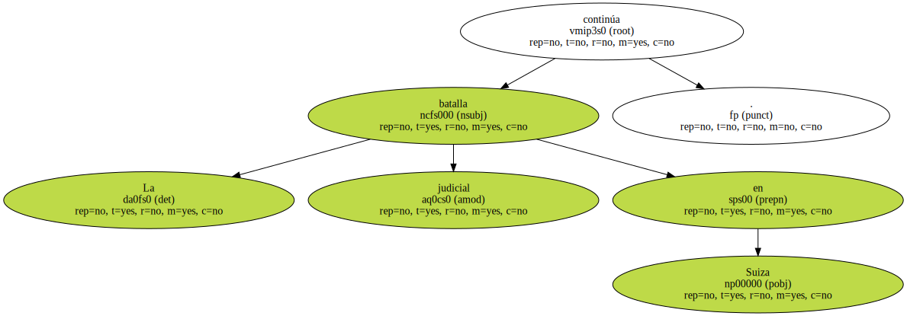KIO ha recurrido ante el Tribunal Federal de Lausana la sentencia dictada por otros magistrados helvéticos por la que anulaban la transmisión de importantes documentos acusatorios remitidos por medio de los abogados del Grupo Torras a la juez de la Audiencia Nacional Teresa Palacios.
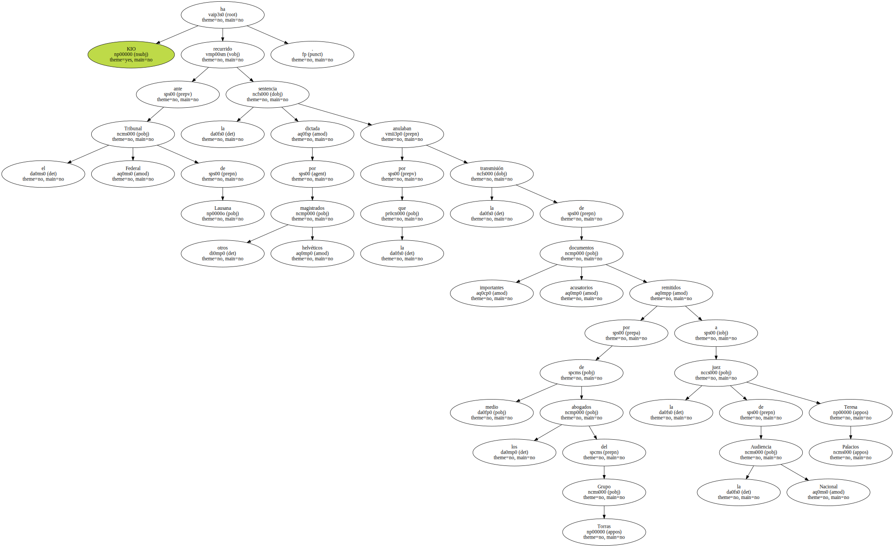Los jueces suizos prohibieron el uso de estas pruebas - - entre ellas las cuentas de De la Rosa en el país - - porque la entrega fue irregular.
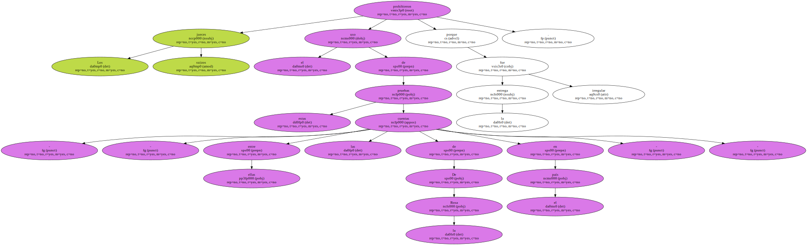